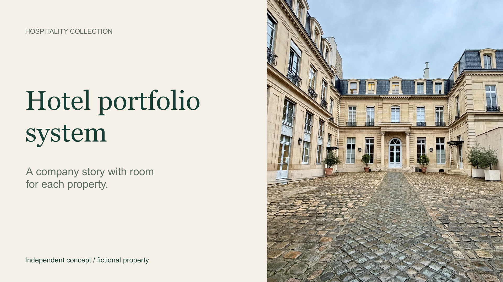
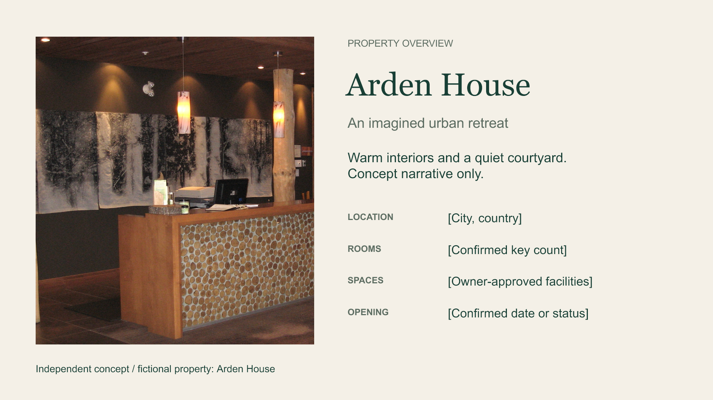

A hotel collection, with room for each property
Two sample layouts showing a shared portfolio style and an individual property page. Arden House is fictional. This AI-assisted concept is not commissioned client work.
The PowerPoint keeps text and photographs editable. The PDF is a visual preview. Real decks would use the hotel’s approved copy, photographs and brand assets.

